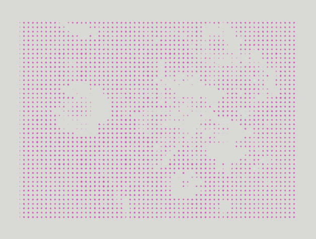
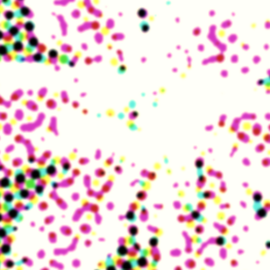

Here’s a quick halftone effect (i.e. a retro printed look) using CSS with only one div at the minimum.
First of all, here’s a live demo:
Toggle the filter class using the checkbox above.
To further illustrate the halftone effect, the following demo can vary the size of the dots and the degree to which they ‘bleed’:
There are several ways to do this in CSS. The above is a bit more advanced with 2-3 extra divs. I’ll try to show a simple method, first.
Halftone basics
To keep it simple, let’s start with a black-and-white image. It should be easy to layer in additional colors with the same principle.
Actually, let’s start with a simpler image. A gradient, to illustrate how halftone works in the first place.
A halftone pattern is an array of ink dots simulating the appearance of smooth gradiation of tones using just two pure tones (pure black ‘ink’ and pure white background in this case). By varying the size of the dots, the average ink coverage in a given area determines how light or dark the tone is in that area.
Dots large enough would bleed into each other, creating the effect of negative dots.
Screen and threshold
Dot size and bleed can be emulated in one go using two simple image processing operations, screen and threshold.
The first step is to screen the source image (in this case, the gradient) with a blurry dot matrix pattern.
Screen is an operation that mixes the pixels of the source image and the overlay image using some kind of an inverted multiplication formula. Essentially, it lightens lighter areas multiplicatively.
Because the dots are blurry (i.e. having feathered edges), the screen operation gives us smaller-looking dots in lighter areas on the original image and denser dots in darker areas—exactly what we want in halftone.
This operation is done via CSS mix-blend-mode: screen.
The blurry dot pattern is generated using a radial-gradient as a repeated background-image, like this:
background-image: radial-gradient(14px at 50% 50%, black, white);
background-size: 20px 20px;
The next step is to threshold the resulting image. That is, convert the image into pure black & pure white pixels. Dark pixels become fully black, and light pixels become white, according to some defined threshold between light vs dark.
This creates the signature black-ink-matrix-on-white-paper look.
In CSS, there is no threshold filter, but it can be simulated by applying an extremely high contrast filter, pushing pixel values to the extremes of pure white and pure black. Effectively the same result as thresholding. In code, that’s simply a filter: contrast(999).
Another thing we can add is a blur filter, just before the thresholding operation. This emulates surface tension of the ink, or something.
Let’s take a moment to look at the basic black-and-white solution so far:
<div class="halftone">
<img src=...>
</div>
<style>
.halftone {
position: relative;
/* brightness controls the threshold point */
filter: brightness(0.8) blur(3px) contrast(999);
}
.halftone::after {
position: absolute;
inset: 0;
background: radial-gradient(10px at center, black, white);
background-size: 20px 20px;
mix-blend-mode: screen;
}
</style>
Colours may yeet knowingly
When you get the black ink dots going, adding the rest of the colours is easy. Just add a set of dots for each of CMY—cyan, magenta, and yellow, the “primary colours” of ink—to complete the CMYK! Make sure to stagger the dots so they are distributed evenly. How to stagger them well is left as an exercise to the dear reader, you (see halftone angles, moiré patterns, etc).
background:
radial-gradient(10px at center, #000, white),
radial-gradient(10px at ..., #0ff, white),
radial-gradient(10px at ..., #f0f, white),
radial-gradient(10px at ..., #ff0, white);
These additional layers will work just as well as black because the contrast filter operates on each RGB channel independently. The colours of cyan (#0ff), magenta (#f0f), and yellow (#ff0)are at their own extremes in each RGB channel, just like black (#000) and white (#fff). Thus, the contrast filter produces a similar thresholding effect on each colour in CMYK independently and simultaneously!
Note: This is not a very accurate representation of halftone, mainly due to the operations being in RGB, not CMY. An accurate simulation would be to apply thresholding to each channel in some CMY space via JS or maybe WebGL. But this shallow emulation may look good enough in many cases.
Here’s the result…?

Only magenta is showing, because the magenta layer is the top layer in that background-image list! The other layers are hidden beneath the magenta layer. We need to combine these layers to see all the colours.
In order to mix the four layers of ‘ink’ correctly, you must use the multipy blend mode to simulate how inks mix together (i.e. subtractive colour mixing).
Since we’re mixing background-images together, we use this property: background-blend-mode: multiply.
Aaand that’s it! A simple Halftone effect with a single div wrapper!
This simple filter is not very robust, so you may want to tailor the brightness and saturation levels of the particular source image.
<div class="halftone">
<img src=...>
</div>
<style>
.halftone {
position: relative;
filter: brightness(0.8) blur(3px) contrast(999);
}
.halftone::after {
position: absolute;
inset: 0;
background:
radial-gradient(10px at center, black, white),
radial-gradient(10px at 5px 5px, cyan, white),
radial-gradient(10px at 15px 5px, magenta, white),
radial-gradient(10px at 10px 15px, yellow, white);
background-size: 20px 20px;
background-blend-mode: multiply;
mix-blend-mode: screen;
}
</style>
A minor point, but the demo above actually uses two separate overlay divs instead of a single div. This is to achieve better dot staggering.
Variations
Notice anything wrong with the last image above? There’s an unexpected pattern on the magenta in that flower petal. It should be a neat grid matrix, not this weird smiley face pattern or whatever it is. Even worse, the amount of ink is not correctly in proportion to the original image’s colour—There are more magenta dots than expected!

Apparently, the black dots were turning into the coloured ones. I think the problem was that: coloured source image⊕ black dot pattern = coloured dots, where the symbol ⊕ represents the screen-threshold operation. In other words, colour is contagious!
What I did to fix this was separate the K layer (black) from CMY, and have it use its own greyscale copy of the source image. greyscale source image ⊕ black dot pattern = black dots.
Here’s a vivid example where you can toggle the ‘separate-K’ version for comparison purposes:
There are more ways to go about this with different qualities and levels of realism and complexity. Like dithering.
I think the initial single-div solution is actually fine as long as you tweak the source image to be more readable under the filter.
Gallery
To finish with, here are a more demos!
P.S. Please don’t look at the demos’ source code. It’s terrible.